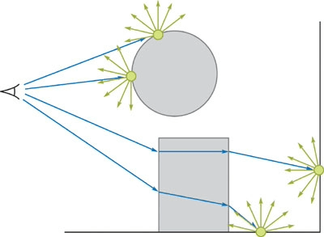

By "4.3 Overview" of [Jensen 2001] and "16.2.2 Photon Mapping" of PBR
Book V3, the photon mapping is composed of two steps: photon tracing
and rendering. During the photon tracing step, the photon
rays are traced from the light sources, and the lighting information of the intersection positions
of these photon rays is recorded as the photons. During the rendering step,
the primary rays are traced from the camera and the final gather rays are
traced from the final
gather points, and the lighting information of the vicinal photons of the intersection
positions of these primary rays or final gather rays is used to approximate
the lighting of these intersection points by density estimation.
By "7.5 Photon Gathering" of [Jensen 2001], "38.2.2 Final Gathering" of [Hachisuka
2005] and "16.2.2 Photon Mapping" of PBR
Book V3, the rendering step of the photon mapping is usually composed of two steps: radiance
estimate and final gathering. During the radiance estimate step,
the primary rays are traced from the camera, and the lighting information of the vicinal
photons of the intersection positions of these primary rays is used to approximate the lighting
of these intersection points by density estimation. During the final gathering
step, from some of the intersection positions of the primary rays, which are called the final
gather points, the final gather rays are traced, and the lighting
information of the vicinal photons of the intersection positions of these final gather rays is
used to approximate the lighting of these intersection positions by density estimation.
Photon Tracing
Rendering / Radiance-Estimate
Rendering / Final Gathering

Density Estimation
By "Equation (16.9)" of PBR
Book V3, "Equation (7.3)" of [Jensen 2001] and "14.4.5 Delta Distributions in the
Integrand" of PBR
Book V3, we have Lo(p,ωo)=∫S2f(p,ωi,ωo)Li(p,ωi)(cosθi)+dωi=∫A(∫S2δ(p′−p)f(p′,ωi,ωo)Li(p′,ωi)(cosθi)+dωi)dA(p′) where δ(p′−p) is the delta function.
By "Equation (16.11)" of PBR
Book V3 and "Equation (7.4)" of [Jensen 2001], the delta function is
approximated by the filter function. This is the reason why the photon mapping algorithm is
biased. Theoretically, the delta function is considered as an unknown
probability density function, and the density estimation is used to
approximate the probability density at the shading position. The
kernel density estimation is one of the methods of the density estimation, and
we have Lo(p,ωo)=∫A(∫S2δ(p′−p)f(p′,ωi,ωo)Li(p′,ωi)(cosθi)+dωi)dA(p′)≈i=1∑N(N1h1K(hpi−p))(∫S2f(p,ωi,ωo)Li(pi,ωi)(cosθi)+dωi) where
h1K(hpi−p)=Kh(pi−p) is the scaled kernel. The
k-NN (k-Nearest Neighbors) is one of the methods of the kernel density
estimation, and is the actual method used by the photon mapping algorithm, and we have Lo(p,ωo)=∫A(∫S2δ(p′−p)f(p′,ωi,ωo)Li(p′,ωi)(cosθi)+dωi)dA(p′)≈Nkπ(Rk(p))21i=1∑N∫S2f(p,ωi,ωo)Li(pi,ωi)(cosθi)+dωi where N=k⇒Nk=1 (the samples are exactly the k-nearest
neighbors, namely, the number of the samples N is exactly the k), and Rk(p), which is also called the radius, is the
maximum distance between each sample position pi and the shading position p.